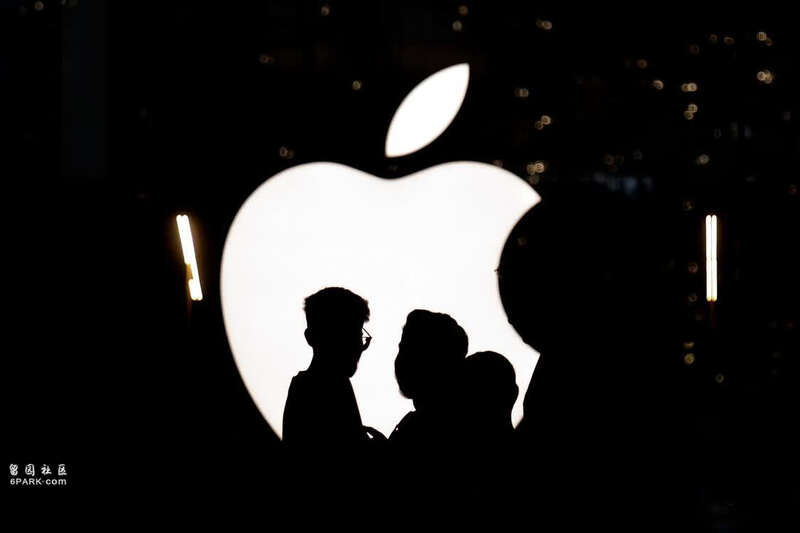
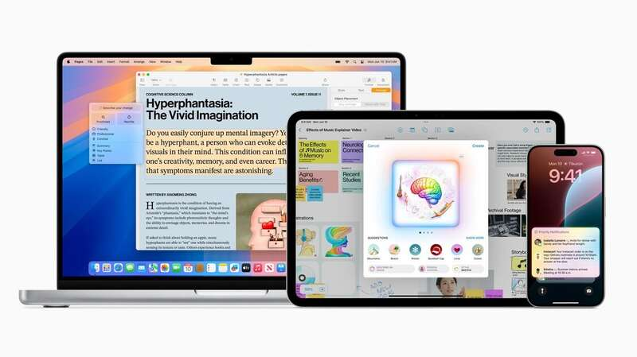
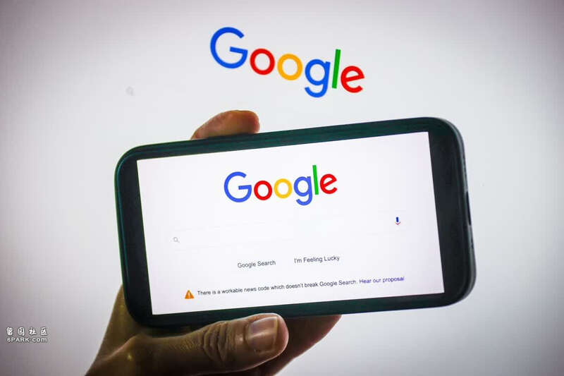
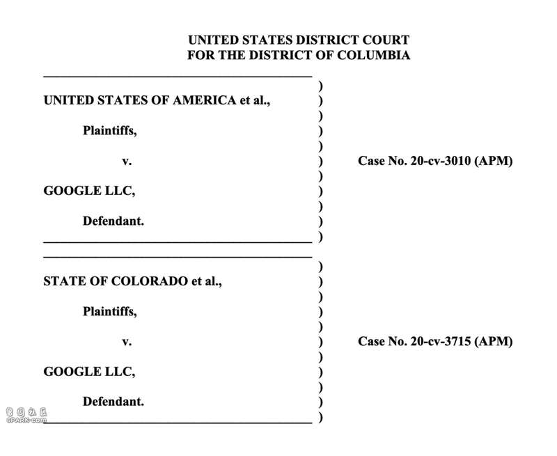
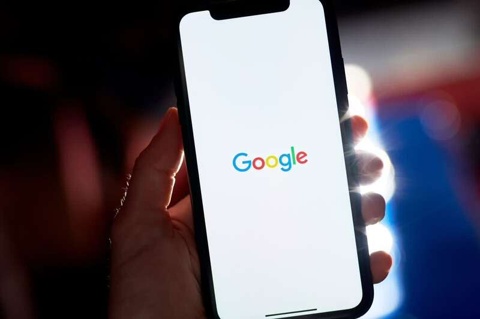

苹果
北京时间8月6日，当地时间周一，美国法官阿密特·梅赫塔(Amit Mehta)裁定谷歌在搜索反垄断案中败诉，从而让美国政府在状告科技巨头道路上取得了一场重大胜利。与此同时，这桩案件可能还有另一个间接输家：苹果公司。
这是因为，法官裁定谷歌垄断搜索市场的一大主要依据就是该公司与平台、设备制造商达成的默认搜索协议。其中，谷歌与苹果签署的协议金额最大。为了成为Safari浏览器上的默认搜索引擎，谷歌单是在2022年就向苹果支付了大约200亿美元(约合1424亿元人民币)。
重要收入受威胁
法官梅赫塔认为，这些协议抑制了竞争，但裁决中并未包括补救措施。谷歌表示，无论如何都会对这一裁决提出上诉。但如果该裁决最终得以维持，并要求谷歌停止签订独家搜索协议，那么这可能会威胁到苹果这项已经变得非常有利可图的收入来源。
苹果体量庞大，去年它创造了近4000亿美元的收入。即使是200亿美元的交易，对苹果来说也不算什么。而且，这项搜索收入可能也不会归零。无论谷歌被必应等竞争对手取代，还是继续以不同条款与iPhone合作，苹果仍有可能通过手机上的搜索引擎获得可观的收益。
不过，与谷歌达成的现有交易是苹果“服务”业务的关键部分。随着苹果的核心业iPhone销量放缓甚至下滑，提高高利润率的服务收入对苹果来说变得至关重要。苹果最近一个季度的财报也体现了这一点，硬件业务收入增长了10亿美元，服务业务收入却增长了30亿美元。

AI可能会弥补苹果损失
因此，任何影响这一增长计划的事情都会引起苹果的担忧。当地时间周一下午，苹果股价已经在科技股被普遍抛售的情况下大跌。在梅赫塔的裁决公布后，苹果股价再次下跌。现在判断该裁决对苹果意味着什么可能还为时过早，但这绝对不是小事。
AI弥补损失
对苹果来说，该裁决危及了一项近年来帮助提振公司收入的来源。但是，这家iPhone制造商已经开始摆脱对传统互联网搜索的依赖。随着苹果对其Siri数字助手进行改进，使其能够更灵活地处理查询，并将AI聊天机器人集成到其软件中，苹果押注AI技术最终将取代传统搜索。
苹果正在将OpenAI的ChatGPT聊天机器人融入其系统中，预计未来也会整合谷歌的Gemini。随着时间的推移，苹果可能会引导消费者使用AI和Siri，而不是网络浏览器。
这将使得苹果有机会与包括谷歌在内的AI提供商达成新的非排他性协议，而不违反美国政府的规定。不过，苹果可能仍需很多年才能从AI中赚取可观收入。
美政府起诉谷歌搜索垄断获“历史性胜利”：谷歌将上诉 会被分拆？

谷歌败诉
北京时间8月6日，美国华盛顿特区法官阿密特·梅赫塔(Amit Mehta)周一裁定，谷歌公司非法垄断了搜索市场，从而让美国政府在20多年来针对科技巨头提起的首个重大反垄断案件中取得了“史诗般”胜利。
梅赫塔在长达286页的判决书中称，谷歌一年支付260亿美元，使其搜索引擎成为智能手机和网络浏览器的默认选项，这有效地阻止了任何其他竞争对手在市场上取得成功。
梅赫塔在判决书中写道：“法院得出以下结论：谷歌是垄断者，它的行为是为了维持自己的垄断地位。”谷歌控制了美国约90%的在线搜索市场，以及95%的智能手机搜索市场。
“谷歌的分销协议将通用搜索服务市场的很大一部分排除在外，损害了竞争对手的竞争机会。”梅赫塔表示。

判决书
梅赫塔指出，通过垄断手机和浏览器上的分销，谷歌能够一直不断提高在线广告的价格，而不会产生任何后果。“审判证据确凿地证明，谷歌通过独家分销协议维持垄断力量，使其能够在没有任何实质性竞争约束的情况下提高文字广告的价格。”他表示。
截至周一收盘，谷歌母公司Alphabet股价下跌近4.5%，至159.25美元。苹果公司可能会因为这桩诉讼失去谷歌每年支付的数十亿美元默认搜索引擎费用，股价下跌4.8%至209.27美元。
上诉
美国司法部长梅里克·加兰(Merrick Garland)表示：“针对谷歌的这场胜诉是美国人民的历史性胜利。任何公司——无论多么大或多么有影响力——都不能凌驾于法律之上。美国司法部将继续大力执行反垄断法。”
谷歌表示，计划对这一裁决提起上诉。谷歌全球事务总裁肯特·沃克(Kent Walker)在一份声明中表示：“在诉讼过程继续推进的同时，我们将继续专注于开发人们觉得有用且易于使用的产品。”

谷歌
反垄断执法人员指控谷歌非法维持了对在线搜索和相关广告的垄断。美国政府称，几十年来，谷歌为了在智能手机和网页浏览器上占据主要位置，向苹果、三星电子和其他公司支付了数十亿美元。这种默认地位让谷歌得以建立起世界上最常用的搜索引擎，并推动了超过3000亿美元的年收入，主要来自搜索广告。
梅赫塔发现，谷歌并未垄断通用搜索广告市场。他指出，亚马逊、沃尔玛和其他零售商等竞争对手已经开始在自己的网站上提供与搜索相关的广告。但他表示，谷歌确实垄断了搜索文字广告。这些广告出现在搜索结果页面的顶部，以吸引用户访问广告主的网站。
梅赫塔的此次判决只关注谷歌的责任。九个月前，美国司法部和一些州与谷歌在联邦法院进行了为期10周的审判。梅赫塔计划在下个月举行听证会，讨论对补救措施进行另一场审判的时间。
关于补救措施的审判可能会很漫长，可能会打到哥伦比亚特区巡回法院和美国最高法院。这起法律纠纷可能会持续到明年，甚至到2026年。
强制分拆？
美国司法部尚未透露将寻求让谷歌作出哪些改变，不过它提供的证据表明，欧洲监管机构要求谷歌向用户提供搜索引擎选择的努力并未导致多少人切换至其他搜索引擎。美国司法部可能会要求将Alphabet的搜索业务与其他产品(如Android或Chrome)分开。如果法官下达这一命令，那么这将标志着自1984年AT&T被分拆以来，美国公司遭遇的最大强制分拆。
反垄断执法人员还另外起诉谷歌涉嫌垄断用于购买、销售和投放在线展示广告的技术。该案将于下个月在弗吉尼亚州联邦法院开庭审理。在该案中，美国政府寻求迫使谷歌出售其部分广告技术产品。
投资公司Synovus Trust高级投资组合经理丹·摩根(Dan Morgan)表示，这一判决加剧了一直笼罩在谷歌头上的法律和监管不确定性的“乌云”。“谷歌的季度业绩本已令人失望，这个判决更是雪上加霜。”他表示。